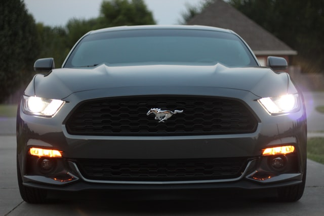

현행 모델은 6세대. 포니카의 시발점이고 머슬카의 시발점인 GTO, 카마로와 경합했던 차로 50년 넘게 이어져 오고 있는 포드, 아니 미국의 자존심이다. 남녀노소에게 사랑받는 차이다. 상대적으로 외국차들의 영향이 덜한 미국의 중남부쪽으로 가기 시작하면 머스탱을 필두로 한 포니카들이 널려있다. 요즘 젊은이에겐 적당한 가격과 성능으로 사랑받고 있고, 나이 좀 있는 30 ~ 60대들에겐 과거 디트로이트의 영광이었던 향수를 일으키며 아직도 인기를 누리고 있다. 첫 출시 이후, 끊임없이 생산중인 미국 자동차의 대표적인 장수 모델.[1] 그 긴 역사만큼, 재밌는 스토리도 많고 미디어에서도 자주 다루어진다. 자동차 페인트에 많이 쓰이는 색상인 '캔디 애플 레드'도 머스탱이 사용하면서 유명해졌다.
간혹 미국차에만 카피캣이 있다고 생각하는 사람들이 있지만 1970년대 토요타 셀리카도 머스탱의 영향을 잔뜩 받은 디자인으로 판매 당시 리틀머스탱이라고 불렸다. 대중차 플랫폼을 베이스로 약간 젊은 감각으로 다듬은 스포티/스페셜티 모델이 성공적인 판매고를 올릴수 있단 것을 제대로 증명한 첫 모델로, 길게 보면 현대자동차 스쿠프에서 벨로스터로 이어지는 국산 스포티카들도 이러한 발상의 연장선에서 만들어진 차들이라 할 수 있다. 당시에 도입했던 패스트백은 1960년대에는 다소 생소한 디자인이었으나 도피도 스타일이라고 불리며 센세이셔널한 디자인 혁명을 불러왔다. 경쟁모델들도 하나 같이 다 패스트백을 채용했다. 현재 중고차 시장에서도 클래식 머스탱들 중 패스트백 모델은 쿠페 모델보다 거의 2배의 가격을 형성할 정도로 가치가 있는 디자인. 4세대부터는 무조건 전 모델에 패스트백 디자인이 적용되었다. 로고는 말인데 똑같이 말이 들어가는 포르쉐와 페라리는 말이 뒷발로 버티면서 앞발을 들어올린 형상이고 이쪽은 달리는 말의 형상이다